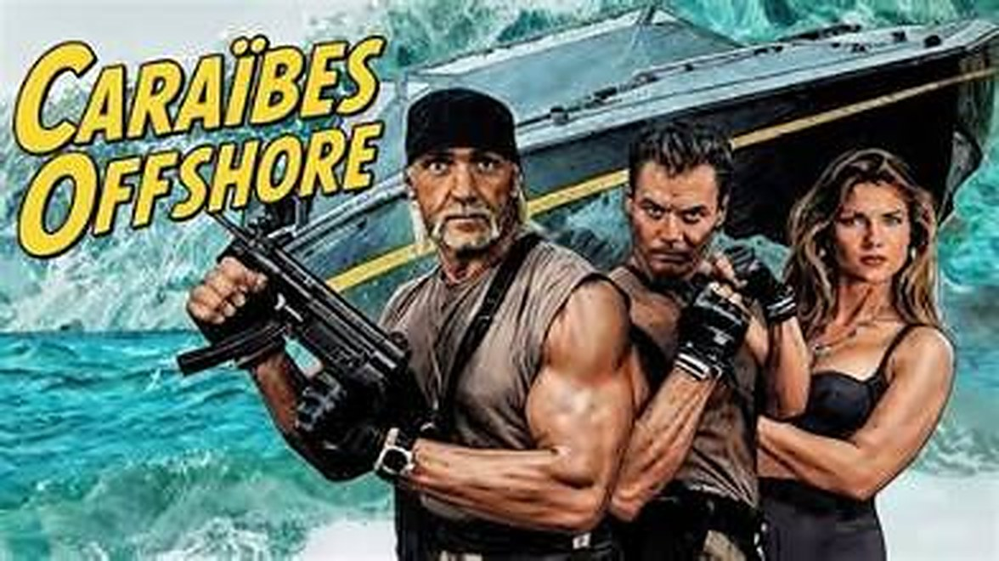
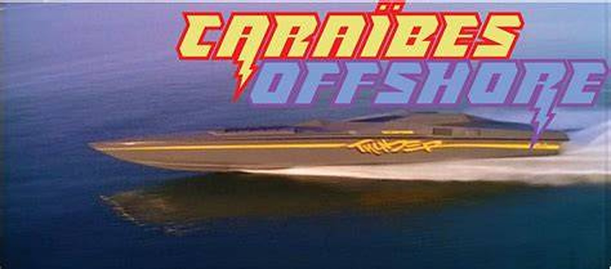
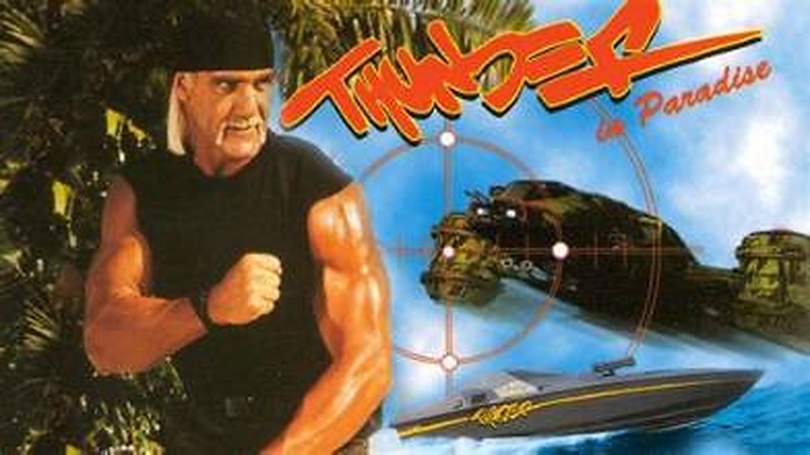

J'avais une dizaine d'années.
Avec mon copain d'école, on était fans de Caraïbes Offshore. On ne ratait jamais un épisode.
Et on ne s'arrêtait pas à regarder : dans la cour de récré, ou chez l'un comme chez l'autre le week-end quand on s'invitait, on rejouait les aventures du duo.
Des années plus tard, le souvenir est resté intact.
Ce soir, on reprend la mer à bord de Thunder.

Le duo, Kelly et Thunder
Caraïbes Offshore, titre original Thunder in Paradise, est une série d'aventures américaine créée par Michael Berk, Douglas Schwartz et Gregory J. Bonann. Un pilote de 90 minutes sort en vidéo en septembre 1993. La série suit en 1994, en syndication, avec une saison de 22 épisodes.
Au centre, deux anciens Navy SEALs : Randolph J. « Hurricane » Spencer, joué par Hulk Hogan, et Martin « Bru » Brubaker, joué par Chris Lemmon. Mercenaires, ils opèrent depuis un complexe tropical de la côte du golfe de Floride. Ils combattent criminels et méchants à bord de Thunder, leur bateau high-tech.
Autour d'eux, Jessica, la jeune fille de leur collègue décédé, qui vit avec eux. Kelly LaRue (Carol Alt), ancienne mannequin, tient le Scuttlebutt Bar & Grill sur la plage et veille sur Jessica pendant les missions. Edward Whitaker (Patrick Macnee), oncle de Jessica et propriétaire du complexe, apporte la touche comique.
En France, la série a été diffusée sur M6, puis sur Série Club.
La série est signée Michael Berk, Douglas Schwartz et Gregory J. Bonann, présentés comme les créateurs d'Alerte à Malibu. Elle est produite par Berk/Schwartz/Bonann Productions, Rysher Entertainment et Trimark Pictures. Hulk Hogan en est la tête d'affiche et le producteur exécutif.
C'est aussi une collaboration entre Hogan et Disney. Le pilote est tourné en avril 1993 autour de l'hôtel Don CeSar, à St. Pete Beach, en Floride. Après la commande de la série, la production s'installe à Disney-MGM Studios, qui prête à Hogan son plus grand plateau. Le tournage principal se déroule ensuite au Grand Floridian Resort & Spa de Disney, avec d'autres scènes à Old Key West, Fort Wilderness et Epcot.
La série reste dans le milieu du catch. Sting, Brutus « The Barber » Beefcake, « The Anvil » Neidhart, Jimmy Hart et Terry Funk font partie de la distribution. Hogan est aussi crédité, avec Jimmy Hart et John Maguire, pour le thème de fin.
Elle est diffusée en syndication du 25 mars au 27 novembre 1994, une saison de 22 épisodes, puis annulée. En mai 1994, Hogan annonce à la WCW vouloir revenir au catch professionnel. Un jeu CD-i est tiré d'un double épisode. Une version Super Nintendo a été annoncée, mais elle n'est jamais sortie.

Thunder, le bateau high-tech
Deux anciens Navy SEALs, Spencer et Bru, travaillent comme mercenaires depuis un complexe tropical de la côte du golfe de Floride. À bord de Thunder, leur bateau high-tech, ils parcourent le monde pour combattre criminels et méchants, entre missions dangereuses et infiltrations.
Mais le duo a une vie à la maison : Jessica, la jeune fille de leur collègue décédé, qui vit avec eux. Kelly LaRue, qui tient le bar de la plage, la garde pendant les missions et trouble Bru. Edward Whitaker, le propriétaire du complexe, apporte la touche comique.
Chaque épisode part du même schéma : une mission, un méchant, et un retour à la plage.
Caraïbes Offshore reprend la formule de ses créateurs, ceux d'Alerte à Malibu : un décor de vacances, des personnages récurrents et des missions à répétition. La différence est l'action. Deux anciens Navy SEALs, un bateau high-tech et des méchants à neutraliser, le tout dans un complexe tropical.
La série repose sur sa star. Hulk Hogan y est à la fois acteur principal et producteur exécutif, dans un projet monté avec Disney, et le catch y est très présent : Sting, Brutus Beefcake, The Anvil, Jimmy Hart et Terry Funk font partie de la distribution.
Le duo fonctionne par contraste : Spencer, la force, et Bru, plus léger. Autour d'eux, la petite Jessica, Kelly au bar et Edward Whitaker pour l'humour forment une famille de substitution. C'est un cadre facile à rejouer en cour de récré, ce qui explique en partie pourquoi la série marque les enfants.
La critique est moins tendre : David Cornelius la juge amusante, mais « stupide, sexiste et embarrassante », et Entertainment Weekly l'a classée en 2008 comme la série de syndication la plus « cheesy ». Ce sont deux avis cités sur la page Wikipedia EN, je n'ai pas d'autres sources critiques.
Pour moi, c'est sa force : une série sans prétention, qui assume le décorum de l'époque, avec Thunder qui tient presque le rôle d'un troisième personnage.

Hulk Hogan, alias Hurricane Spencer
Caraïbes Offshore n'a duré qu'une saison de 22 épisodes, du 25 mars au 27 novembre 1994, puis elle a été annulée. Je n'ai trouvé ni audiences ni raison officielle de l'arrêt.
Quelques éléments l'expliquent peut-être. En mai 1994, en pleine diffusion, Hulk Hogan annonce à la WCW qu'il veut retourner au catch professionnel. La série repose sur lui, et son départ la fragilise. Elle est aussi diffusée en syndication, donc sans la visibilité d'un grand network, et sa réputation critique reste modeste : « cheesy » pour Entertainment Weekly, « stupide, sexiste et embarrassante » pour David Cornelius.
Elle a pourtant ressurgi : rediffusée sur TNT aux États-Unis, puis en France sur M6 et Série Club. Côté édition, je n'ai pas trouvé de DVD français.
Ces causes sont des hypothèses : les sources ne les relient pas directement à l'annulation. La série a surtout survécu dans la mémoire de ceux qui l'ont vue petits.
Parce que c'est une série d'aventures sans arrière-pensée : un duo, un bateau, une plage, une mission par épisode. Ce format est rare aujourd'hui, et il se regarde sans prise de tête.
Parce que c'est un morceau de culture populaire des années 90. Hulk Hogan y est à son plus visible hors du ring, avec des figures du catch autour de lui : Sting, Brutus Beefcake, The Anvil, Jimmy Hart, Terry Funk. Pour qui connaît le catch de l'époque, c'est un petit plaisir à repérer.
Parce que Thunder, le bateau high-tech, est un vrai personnage : futuriste, démesuré, très années 90.
Et parce qu'avec une saison de 22 épisodes, on peut la revoir en entier sans s'engager sur des années.
Caraïbes Offshore n'est pas la série la plus célèbre de sa décennie, ni la mieux notée. Mais elle a fait ce qu'on lui demandait : divertir.
Pour moi, c'est avant tout une affaire d'enfance : une série que j'ai vraiment appréciée, et Hulk Hogan, qui m'a énormément marqué. J'en garde un merveilleux souvenir.
Un copain d'école, une cour de récré, un duo à rejouer et un bateau nommé Thunder. Certaines séries n'ont pas besoin d'être des chefs-d'œuvre pour rester. Celle-ci est restée.
La cassette est dans le lecteur. On rembobine.
Titre original
Thunder in Paradise
Pays
États-Unis
Genre
Action / Aventure
Diffusion
Syndication, 1994 (22 épisodes)
Créateurs
Michael Berk, Douglas Schwartz & Gregory J. Bonann
Tournage
Floride (Disney-MGM Studios)
En France
M6, puis Série Club
Fil conducteur
Séries TV cultes — EP. 08
SOMEDAY — SÉRIES EP. 08